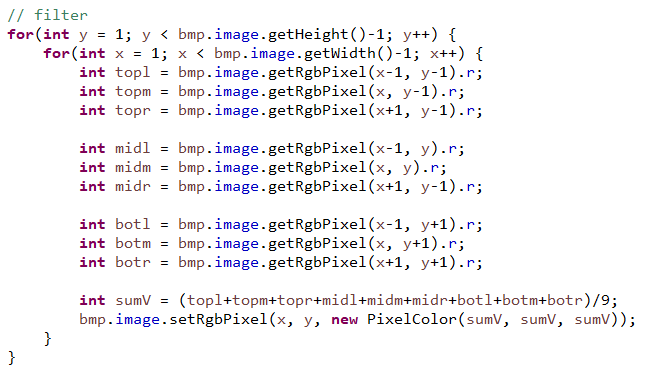
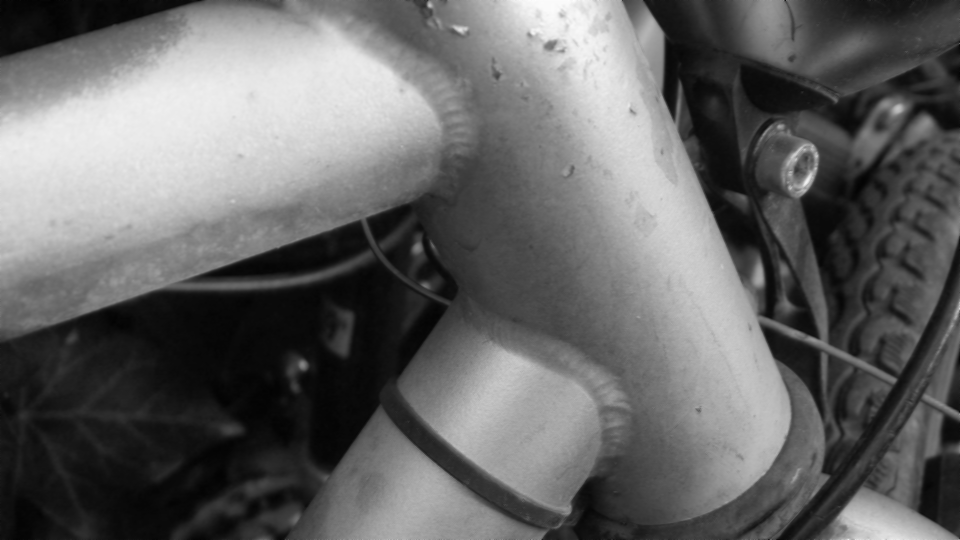

Nr.1 a)
Manmade (gefiltert)
Nature (gefiltert)
Die Details der Bilder werden weniger sichtbar. Dadurch werden sie unscharf.
Vladislav Fetisov
Maik Boateng
Ausgansbilder:


Die Details der Bilder werden weniger sichtbar. Dadurch werden sie unscharf.
Man kann die Randpixel bei der Berechnung übergehen wie in dem von mir gezeigten Code. Man könnte auch einen fixen wert festlegen für die Pixel außerhalb des Bildes, dann bekommt man jedoch einen Rahmen um das Bild gezogen. Mit Hilfe von einen reihe von if Abfragen könnte man identifizieren um was für einen Pixel es sich im Bearbeitungsschritt handelt(Rand-/Eck-/Zentralpixel) und die Mittelwertberechnung entsprechend anpassen(Man Teilt durch einen geringere Pixelanzahl).


Die kleineren Fehler konnten vollständig behoben werden. Die größeren sind noch zum Teil vorhanden. Wir haben den Median -1 gewählt.